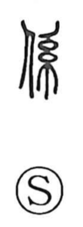

係

Kun: kakari, kakaru, kakawaru | On: kei
connection ・ relation ・ to be connected ・ person in charge
Explanation
係 combines 人, a person, with 系, hanging or connected cords. The cords were ornaments attached to a person in a ritual setting. To attach them was to establish a bond: the person was tied into a particular relation or role.
From this physical attachment, 係 develops the broader senses ‘connect,’ ‘be related,’ and ‘be involved.’ A bond can also bind or constrain someone, giving the sense of an obligation or something on which a person depends. In Japanese, a kakari is the person attached to a particular duty—the person responsible for it. 関係 expresses the relationship between people or matters; 係 retains the idea that one thing is tied to another.